Comparison of CubeSat and SCT Disturbance models
Generate a 3U sized model using both the full CAD model and the simplified CubeSat model and compare the results.
See also ECIToEF, AtmDens2, InertiaCubeSat, Disturbances, CubeSatFaces CubeSatDisturbanceAnalysis
Contents
%-------------------------------------------------------------------------- % Copyright (c) 2016 Princeton Satellite Systems, Inc. % All rights reserved. %-------------------------------------------------------------------------- % Since 2016.1 %--------------------------------------------------------------------------
Parameters
To generate interesting torques, give a non-zero center of mass offset.
cMOffset = 0*[0.02;0;0.01]; % m
Initialize
% Orbit and time step el = [7000 0 0 0 0 0]; nSamp = 100; jD0 = FindSolsticeOrEquinox( 'spring equinox', 2015 ); % CAD Model BuildCADModel( 'initialize' ); BuildCADModel( 'set name' , '3UCubeSat' ); BuildCADModel( 'set units', 'm' ); % Core m = CreateBody('make','name','Core'); BuildCADModel('add body', m ); % This creates the connections between the bodies BuildCADModel( 'compute paths' ); % Core component clear mass optical thermal; mass.mass = 3; mass.inertia = InertiaCubeSat( '3u', mass.mass ); mass.cM = cMOffset; % Relative to the geometric center optical.sigmaT = 0; optical.sigmaA = 0; optical.sigmaD = 1; % Only diffuse reflection optical.sigmaS = 0; thermal.temperature = 300; thermal.emissivity = 0.8; thermal.absorptivity = 0.4; m = CreateComponent( 'make', 'box', 'x', 0.1, 'y', 0.1, 'z', 0.3,... 'name', 'Core', 'body', 1, 'mass', mass, ... 'faceColor', 'gold foil', 'emissivity', thermal.emissivity,... 'absorptivity', thermal.absorptivity, 'sigmaT', optical.sigmaT,... 'sigmaA', optical.sigmaA, 'sigmaD', optical.sigmaD, 'sigmaS', optical.sigmaS,... 'inside', 0); BuildCADModel( 'add component', m ); g = BuildCADModel('get model'); ShowCAD( g );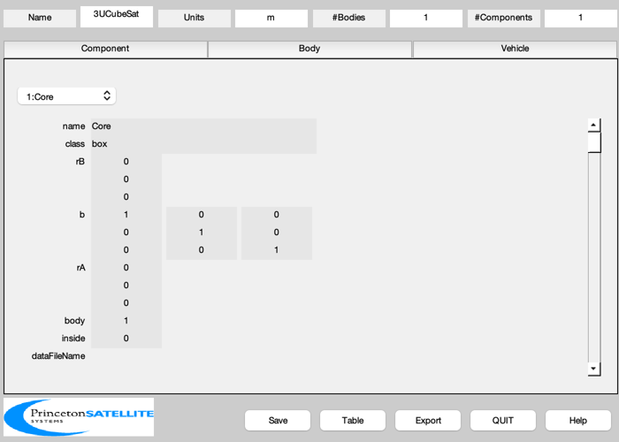 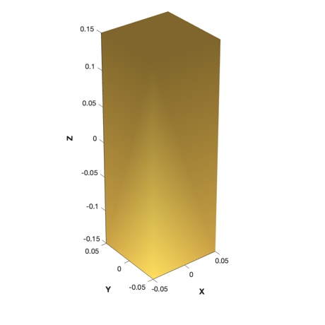
Perform the disturbance analysis using the Disturbances function
We use the EarthEnvironment function which uses AtmDens2
% Get the default data structure to fill in d = Disturbances( 'defaults' ); % Generate the orbit period = Period( el(1) ); d.tSamp = period/nSamp; t = linspace(0,period,nSamp); [r,v] = RVOrbGen(el,t); PltOrbit( el, jD0 ); % Initialize the disturbance model jD = JD2Array( jD0, t ); e = EarthEnvironment( r, v, jD, d ); hD = Disturbances( 'init', g, e ); q = QLVLH(r,v); % ECI to LVLH % Create the transformation matrix arrays for k = 1:nSamp g.body(1).bHinge(k).b = Q2Mat( q(:,k) )'; end % Run the analysis [fD,tD] = Disturbances( 'run', g, e, hD );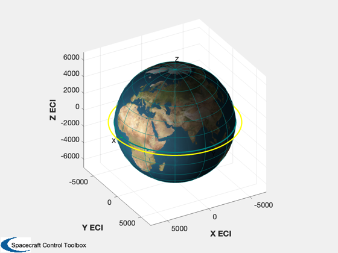 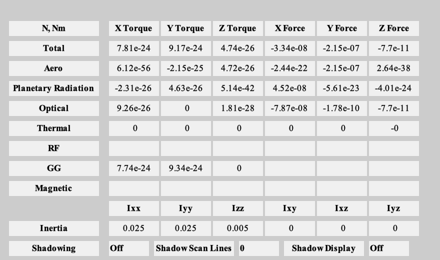 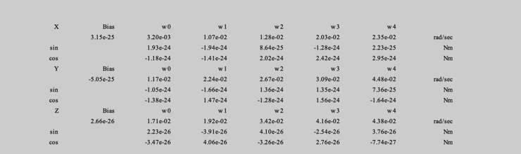 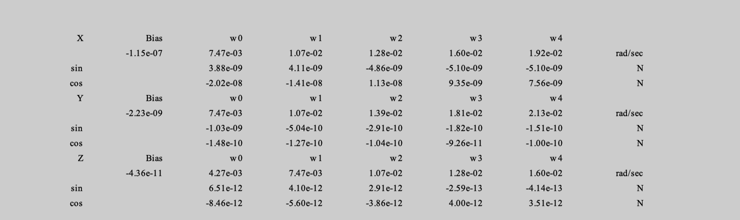
CubeSat model
c = RHSCubeSat; c.mass = 3; c.inertia = InertiaCubeSat( '3U', c.mass ); [a,n,rho] = CubeSatFaces('3U',1); c.surfData.cM = cMOffset; c.surfData.nFace = n; c.surfData.area = a; c.surfData.rFace = rho; for k = 1:6 % Radiation coefficients [absorbed; specular; diffuse] c.surfData.sigma(:,k) = [optical.sigmaA;optical.sigmaS;optical.sigmaD]; end c.atm = []; % Force use of AtmDens2 for comparison %q = [ones(1,size(r,2));zeros(3,size(r,2))]; [tC, fC, h, hECI, fr, tq] = CubeSatDisturbanceAnalysis( c, q, r, v, jD );
Plotting
The remaining difference in the drag models is due to a difference in the transformation between the inertial frame and Earth-fixed frame between the two models. CubeSat uses uses a fast almanac function, ECIToEF, while Pro uses VAtm, which ignores the Z component of the Earth rotation due to nutation. The solar pressure forces are a bit different due to different solar ephemeris functions: CubeSat uses SunV1 while Pro uses the higher fidelity SunV2.
Plot2D(t,[fD.total;fC],'Time',{'Fx','Fy','Fz'},'Disturbance Forces','lin',{[1 4],[2 5],[3 6]}); legend('Full','CubeSat') Plot2D(t,[fD.aero;fr.aero],'Time',{'Fx','Fy','Fz'},'Aero Disturbance','lin',{[1 4],[2 5],[3 6]}); legend('Full','CubeSat') Plot2D(t,[fD.optical+fD.pR;fr.optical],'Time',{'Fx','Fy','Fz'},'Optical Disturbance','lin',{[1 4],[2 5],[3 6]}); legend('Full','CubeSat') if (any(cMOffset~=0)) Plot2D(t,[tD.total;tC],'Time',{'Tx','Ty','Tz'},'Disturbance Torques','lin',{[1 4],[2 5],[3 6]}); legend('Full','CubeSat') end Figui; %-------------------------------------- % PSS internal file version information %-------------------------------------- % $Id: 4c626f29e506b9b92bad58fa8fe67fbc35383eda $
 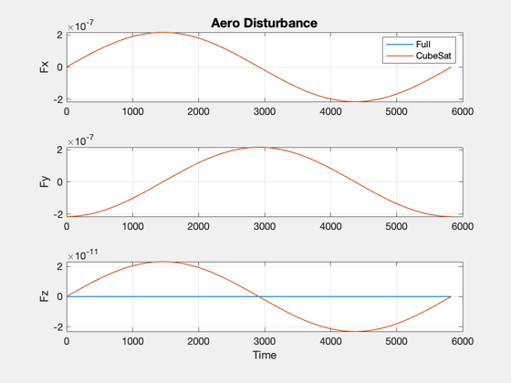 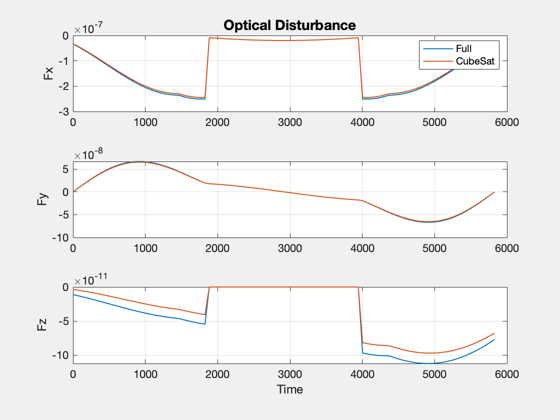 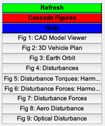
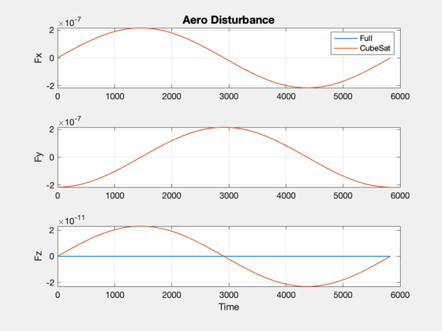 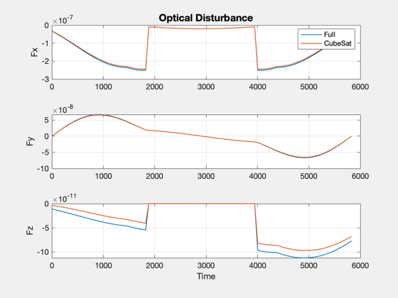 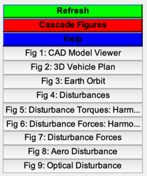